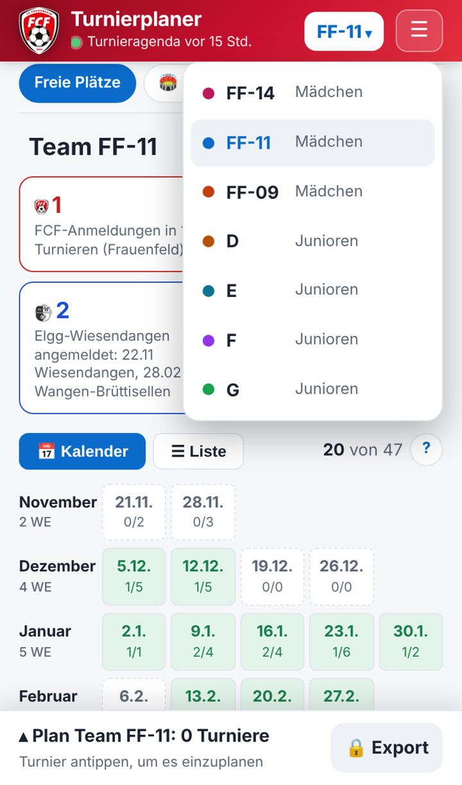
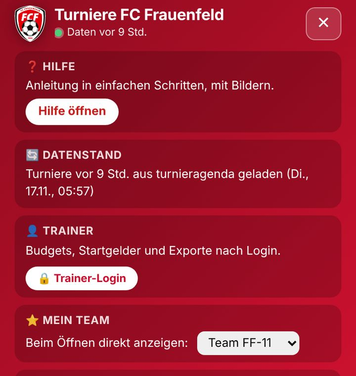
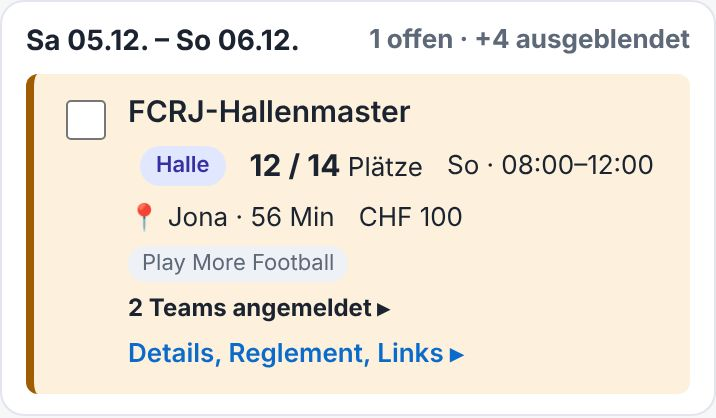
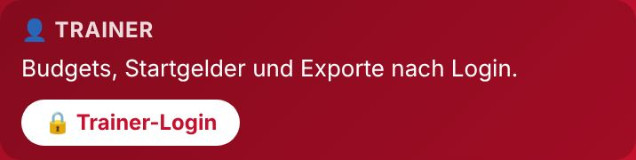
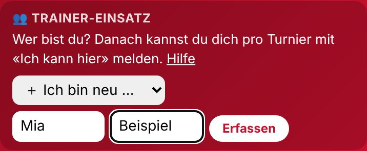
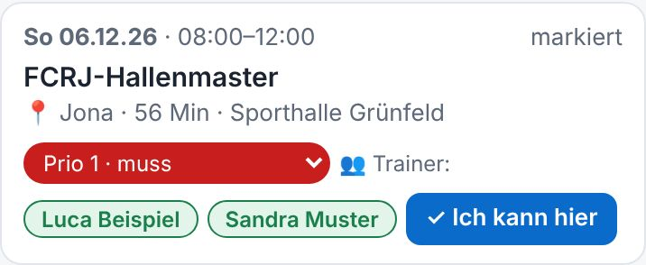
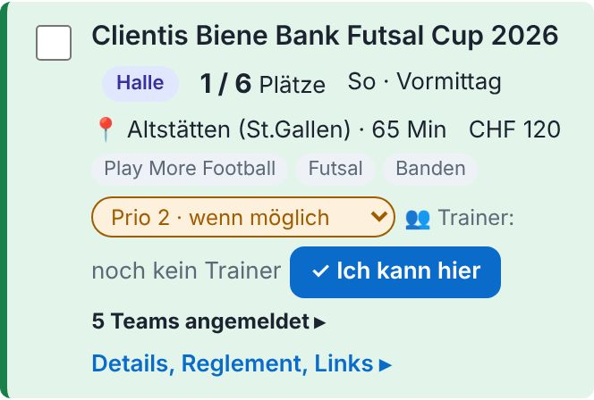
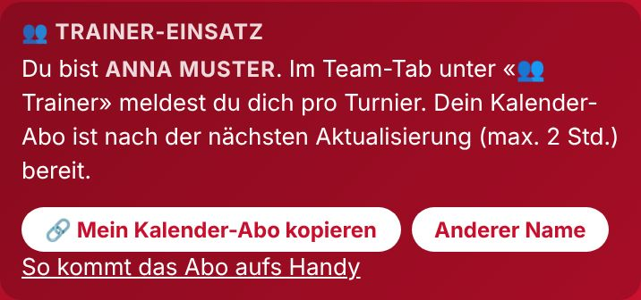

Das Wichtigste in 30 Sekunden
- Der Turnierplaner zeigt alle Turniere für unsere Teams. Oben wählst du dein Team.
- Als Trainer tippst du im Menü ☰ auf Trainer-Login und gibst das Passwort ein.
- Dann wählst du deinen Namen und tippst bei einem Turnier auf ✓ Ich kann hier. Fertig.
📱 Die App auf dein Handy
So hast du die App wie ein normales App-Symbol auf dem Handy.
iPhone
- Öffne die Seite in Safari.
- Tippe unten auf Teilen (Viereck mit Pfeil nach oben).
- Tippe auf Zum Home-Bildschirm und dann auf Hinzufügen.
Android
- Öffne die Seite in Chrome.
- Tippe oben rechts auf ⋮.
- Tippe auf Zum Startbildschirm hinzufügen oder App installieren.
🔎 Turniere anschauen
- Oben wählst du dein Team, zum Beispiel FF-11. Darunter kannst du filtern, zum Beispiel nur Halle oder nur ≤ 45 Min Fahrzeit.

- Tipp: Im Menü ☰ bei Mein Team stellst du ein, welches Team beim Öffnen gleich erscheint.

- Im 📅 Kalender siehst du jedes Wochenende mit seinen Turnieren. Die Zahlen 12 / 14 heissen: 12 Plätze sind noch frei, von 14.

- Tippe auf Details, Reglement, Links. Dort stehen Halle, Spielzeit, Kosten und der Link zur Anmeldung.

👤 Als Trainer anmelden
- Tippe oben rechts auf ☰. Tippe bei Trainer auf Trainer-Login und gib das Trainer-Passwort ein.

Das Passwort bekommst du vom Trainer-Verantwortlichen. Das Login gilt 24 Stunden. - Jetzt erscheint Trainer-Einsatz. Wähle deinen Namen und tippe auf Weiter.

- Dein Name fehlt? Wähle ＋ Ich bin neu …, schreibe Vor- und Nachname und tippe auf Erfassen. Das machst du nur einmal.

✓ «Ich kann hier» sagen
- Wähle oben dein Team und tippe auf 👥 Trainer.

- Der Kalender zeigt alle Turniere des Monats. Ein Punkt heisst: Hier ist ein Turnier. Ein roter Punkt heisst: Prio 1, hier brauchen wir sicher jemanden. Tippe auf einen Tag, um nur diesen Tag zu sehen. Mit ‹ › wechselst du den Monat.

- Unter dem Kalender stehen die Turniere. Tippe auf ✓ Ich kann hier.

- Jetzt steht dein Name rot beim Turnier, und der Tag ist im Kalender rot. Die anderen Trainer sehen das auch. Kannst du doch nicht? Tippe auf ✗ Abmelden.

⭐ Ein Turnier markieren (Prio)
Ein Turnier, für das der FCF noch nicht angemeldet ist, erscheint erst bei 👥 Trainer, wenn jemand es markiert.
- Geh in den 📅 Kalender oder die ☰ Liste. Bei jedem Turnier gibt es das Feld ☆ für Trainer markieren.
- Wähle eine Prio:
Prio 1 · muss da gehen wir sicher hin
Prio 2 · wenn möglich gerne, wenn genug Trainer können
Prio 3 · Option nur falls es passt
📅 Die Turniere in deinem Kalender
Dein persönlicher Kalender zeigt alle Turniere, bei denen du «Ich kann hier» getippt hast. Er aktualisiert sich von selbst.
- Menü ☰ → Trainer-Einsatz → Mein Kalender-Abo kopieren.

- Füge den Link so in deinen Kalender ein:
iPhone
- Öffne Einstellungen → Kalender (bei neueren iPhones: Apps → Kalender).
- Accounts → Account hinzufügen → Andere.
- Kalenderabo hinzufügen → Link einfügen → Weiter → Sichern.
Android / Google Kalender
- Öffne am Computer calendar.google.com.
- Links bei Weitere Kalender auf + → Per URL.
- Link einfügen → Kalender hinzufügen. Danach erscheint er auch auf dem Handy.
Für SpielerPlus oder den Team-Kalender gibt es im Trainer-Modus unten beim Plan den Knopf Link … kopieren. Dort stehen alle Turniere, bei denen der FCF angemeldet ist, mit den Trainern.
🛟 Es klappt etwas nicht
Ich sehe «👥 Trainer» nicht.
Zuerst im Menü ☰ auf Trainer-Login tippen und das Passwort eingeben. Nach 24 Stunden musst du dich neu einloggen.
Ich habe den falschen Namen gewählt.
Menü ☰ → Trainer-Einsatz → Anderer Name. Dann den richtigen Namen wählen.
Mein Name steht doppelt oder ist falsch geschrieben.
Melde dich beim Trainer-Verantwortlichen, dort wird es korrigiert.
Es kommt «Nicht gespeichert».
Prüfe das Internet. Lade die Seite neu und tippe nochmals. Hilft das nicht: Trainer-Verantwortlichen informieren.
Mein Kalender zeigt nichts oder ist alt.
Warte etwa 2 Stunden, bei Google Kalender bis zu einem Tag. Hast du bei mindestens einem Turnier «Ich kann hier» getippt?
Die App sieht anders aus als hier.
App ganz schliessen und neu öffnen, oder die Seite neu laden. Dann hast du die neuste Version.
Bilder mit Beispiel-Namen. ← Zurück zur App